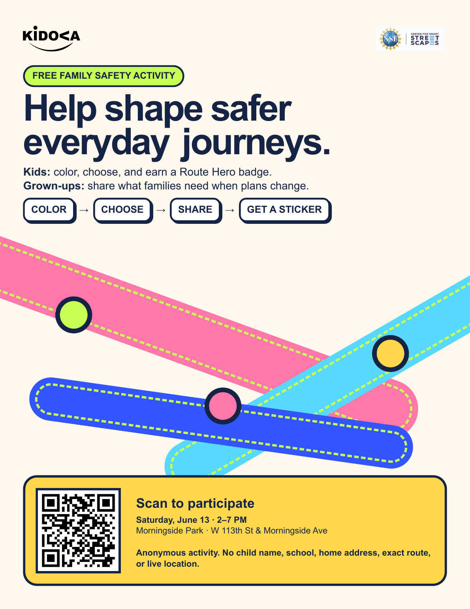
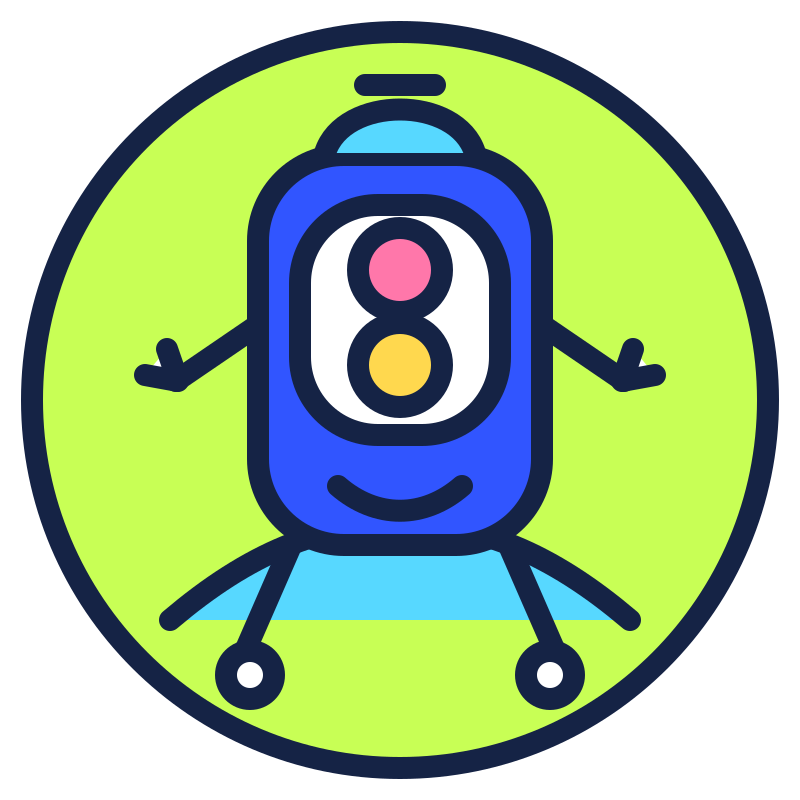
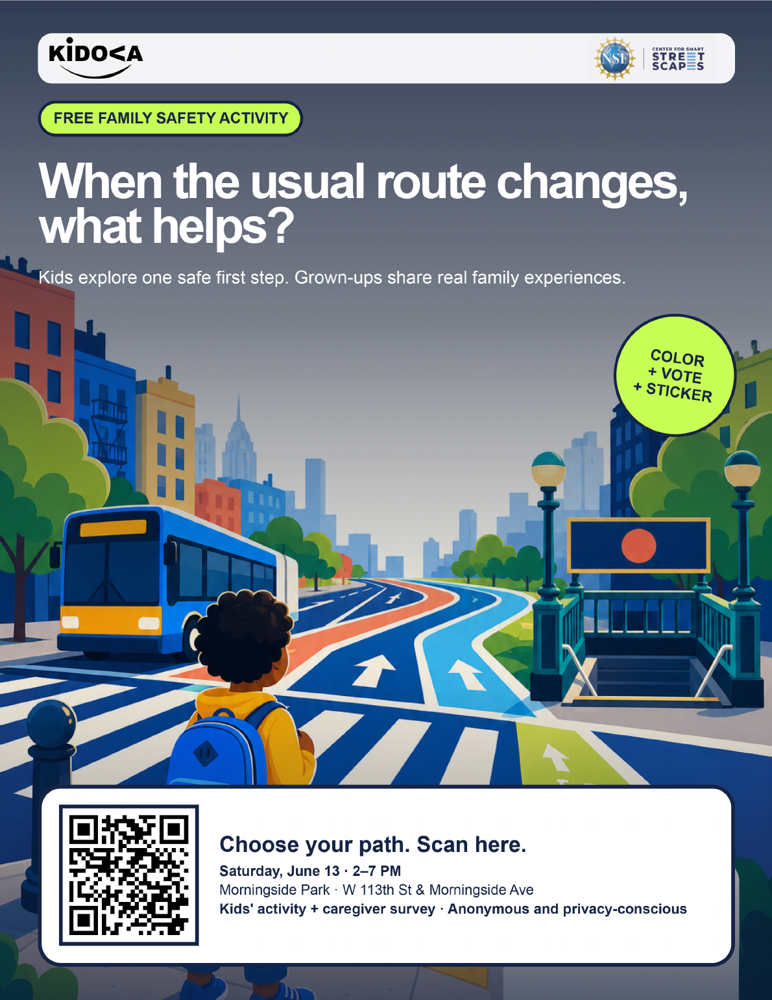
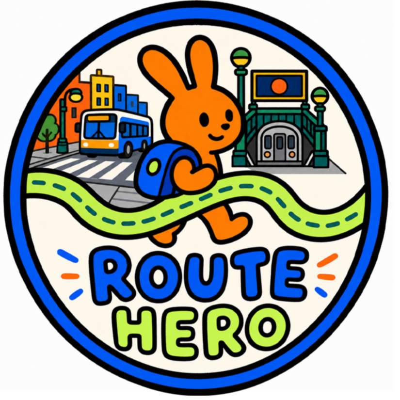
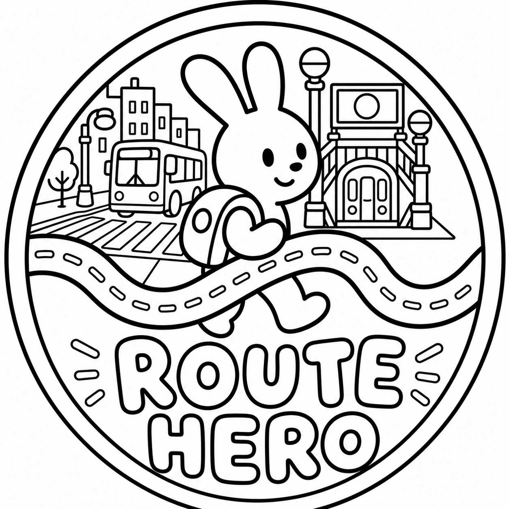

Help shape safer journeys
A quick introduction to the KidsFest family activity.
Kids can color and make one simple safety choice while grown-ups share feedback about real family journeys.
Kidova turns real-time city information into one clear next step for a child, and a calm shared view for their grown-up.

My usual way is blocked, and I am not sure where to go. What should I do first?
At the table: Ask for a street-safety coloring sheet while your grown-up completes the survey.
Show this screen to receive a sticker or coloring sheet at the Kidova table.
You can explore Kidova and try the prototype before or during the survey.
Your answers help us decide what Kidova should build, who it should serve, and whether families truly need it.
Explore how Kidova could support a child and grown-up when a familiar route changes.
See the updated KidsFest posters, meet Route Hero, and continue the activity at home.

A quick introduction to the KidsFest family activity.

See the everyday moment Kidova is designed to support.

Celebrate a safe choice with the official KidsFest digital badge.

Continue the Route Hero activity after KidsFest.
This contact information is stored separately from your survey answers.